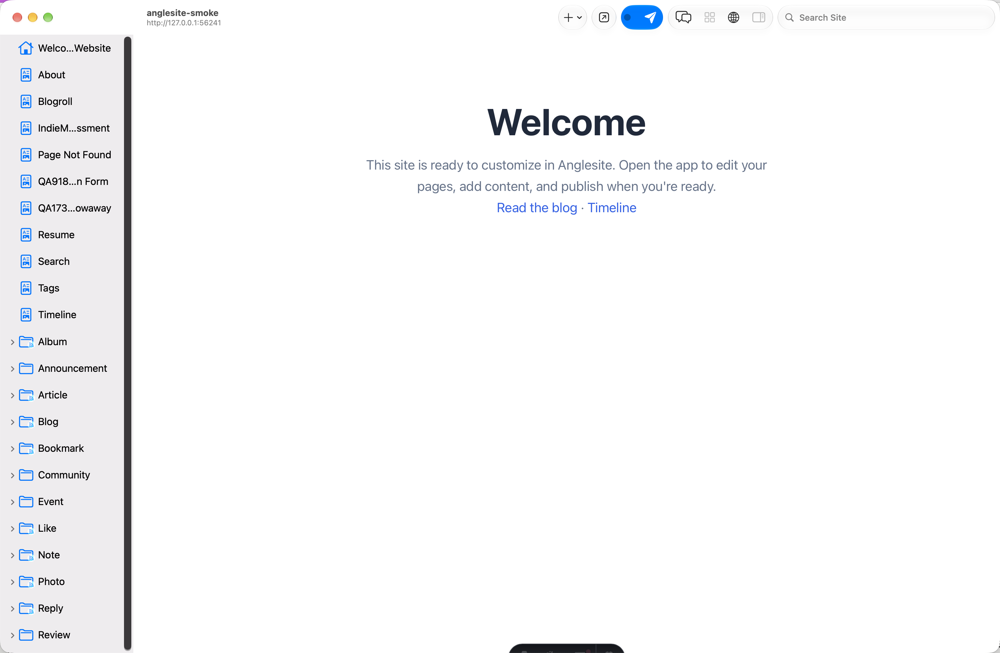
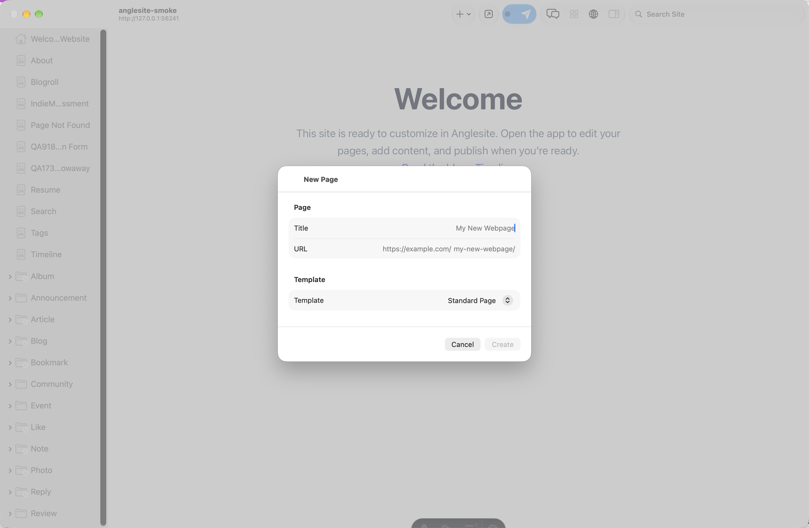

Alongside asking the assistant, you can change your site by hand — right on the page in the live preview, and through the Navigator sidebar, the Format and Page menus, and the Inspector.
The live preview is also the editor. Move the pointer over the page and each part of it — a heading, a paragraph, a picture, a whole section — is outlined as you pass over it. Click to select it, then:
To browse a page without changing it, turn off Site ▸ Edit Page; turn it back on when you want to edit again. Pages that aren't built from a page file (a post rendered from a collection, for example) are changed through the Inspector instead.
Every site window has a Navigator sidebar listing your site's pages, posts, and folders. Click an item to jump to it:
Components, stylesheets, and other supporting files aren't listed in the Navigator directly today — reach them from a Search Site… result (⇧⌘F) or from the Graph pane instead.

A site window has three main panes, switched with View ▸ Preview (⌘1), Editor (⌘2), and Graph (⌘3). Opening a file that isn't rendered as a page — a component, a stylesheet, or a plain text file — switches to the Editor pane automatically, using a plain text editor, a markdown editor, or the component editor (outline plus canvas) depending on the file.
The Graph pane visualizes your Astro project's structure: pages, layouts, components, content collections and their entries, images and other assets, and stylesheets, connected by import, "uses layout," "references asset," and "contains" relationships. It's useful for finding a component or style file to open in the Editor, or for understanding what depends on what before you change something shared.
With a markdown or visual editor focused, Format ▸ Font applies Strong (⌘B), Emphasis (⌘I), Strikethrough, and inline Code; Format ▸ Heading sets Heading 1–6 (⌥⌘1–⌥⌘6); and Format ▸ Add Link… (⌘K) links the selection. These commands are disabled when a plain text file or the site preview itself has focus — they only act on an editor that understands rich formatting.
The Page menu creates new content: New Page… (⌘N) opens a sheet where you give it a title, adjust its URL if you want something other than the auto-generated slug, and pick a template. New Post… and New Link Post… (⇧⌘L, also in the File menu) create posts. Page ▸ Collections ▸ New Collection… sets up a new content collection.

Toggle the Inspector with View ▸ Inspector ▸ Show Inspector (⌥⌘I). Its Metadata tab shows details for whatever's selected — a page's title and description, a component's metadata, or a collection's type and entries. Its Style tab needs an element selected on the canvas first.
With something selected in the Navigator, Edit ▸ Duplicate (⌘D) copies it. Edit ▸ Publish and Unpublish toggle whether the selected page or post is published — this is separate from deploying your whole site; see Deploying your site.